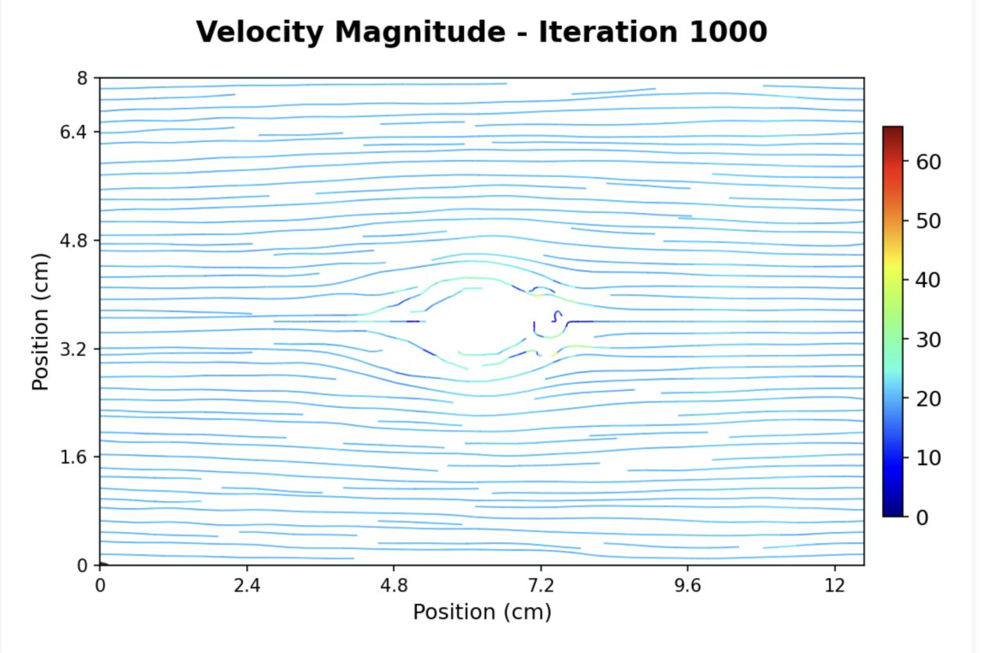
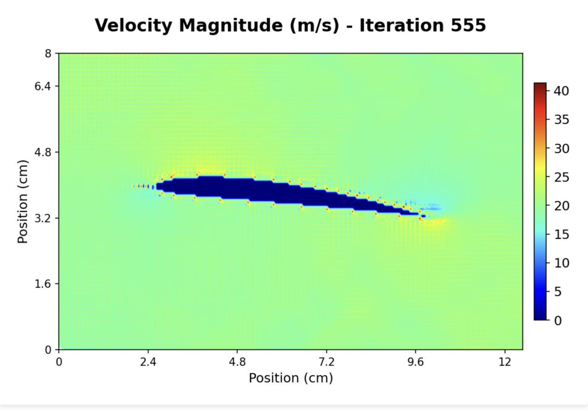
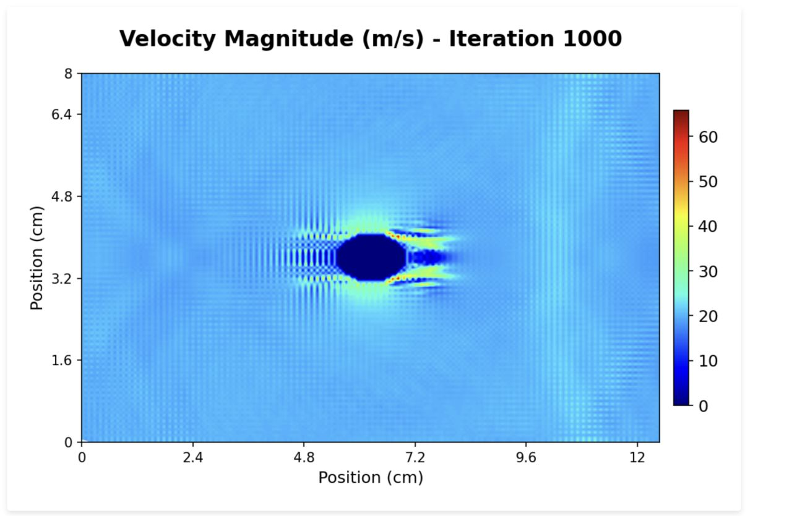
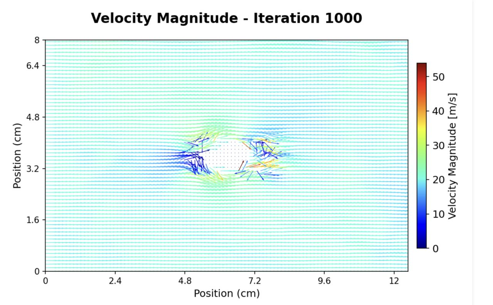

PywebCFD
2025-07-29 20:28:34
During the shift to online learning imposed by the geopolitical situation, I found myself with
a lot of free time. so I decided to experienment with CFD solvers, and that led me to the creation of PywebCFD, my first ever web-based interactive FDM CFD solver.
A little background, PywebCFD is a Finite Difference Method (FDM) solver that numerically solves the flow equations, specifically oprimised for incompressible flows.
it is built using python (with streamlit container).
the main challenge for me as a first year undergraduate student, was to polish my understanding of the flow equations, and then
finish them by learning how to solve them numerically.
among the challenges I faced were :
1. making the solver efficient enough to make it suitable for web hosting.
2. even without the the need for web hosting levels of efficiency, I faced stability issues. this was due to the solver's cartesian grid trying to encompass the curved geometry (stepping inaccuracies). after playing
with CFL conditions, relaxation and different time step lengths, I managed to make it reasonably stable, although much work is still needed to make it more robust.
3. data visulisation: I wanted to be able to visualise the flow field in a smooth manner that didnt kill performance. after lots
of experienmentation I found that using the matplotlib library to generate a static image of the flow field, and then updating frequently
enough was a surprisingly good solution.
My objectives for the forseeible future:
1. switch to IMEX (implicit explicit) schemes, with higher order interpolation.
2. ditch boolean masks for the geometry, and switch to an immersed boundary method. Still cracking this one-any suggestions are welcome!
3. adressing stability and efficiency issues.
You will difenetly see another blog about this topic, as it really piqued my interest and I have a lot to learn. it was difenetly a very steep learning curve.
you can try it out (you need to have lots of patience though) in this link
update : I stopped hosting it, contact me for src code.



